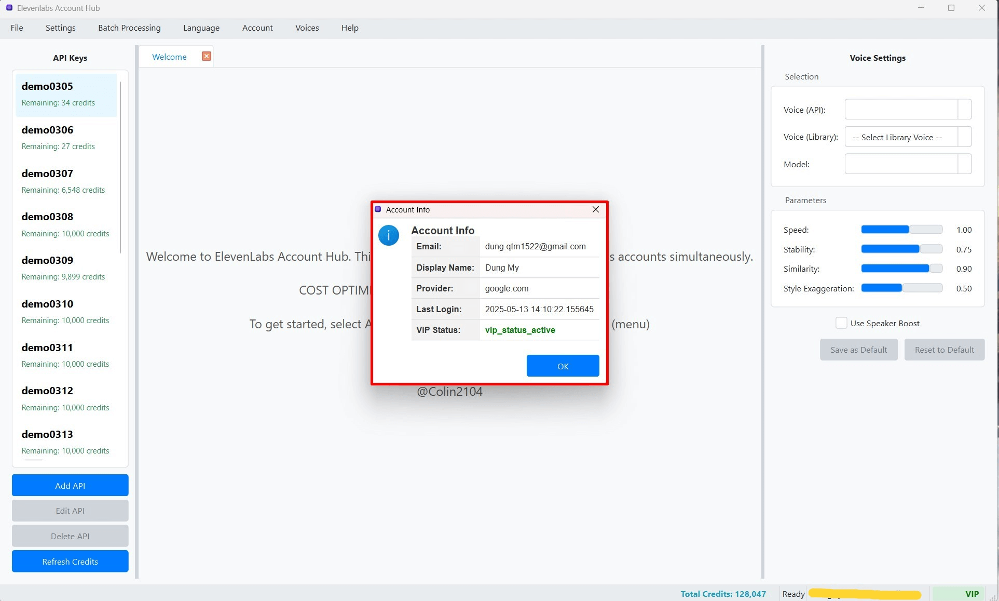

Thông tin Tài khoản VIP và Giấy phép
ElevenLabs Account Hub có thể cung cấp các tính năng nâng cao, không giới hạn, hoặc các lợi ích đặc biệt dành cho người dùng có trạng thái "VIP". Việc xác định và quản lý trạng thái VIP của bạn được thực hiện thông qua hệ thống tài khoản người dùng (đăng nhập bằng Google) và có thể liên quan đến một hệ thống giấy phép (license) do nhà phát triển phần mềm quản lý.
1. Kiểm tra Trạng thái VIP của Bạn
Sau khi bạn đã đăng nhập vào phần mềm bằng tài khoản Google của mình, bạn có thể kiểm tra trạng thái VIP theo các cách sau:
- Thanh Trạng thái (Status Bar):
- Nhìn xuống góc dưới bên phải của cửa sổ chính của ứng dụng.
- Nếu tài khoản của bạn là VIP, Thanh Trạng thái thường sẽ hiển thị một chỉ báo rõ ràng, ví dụ: "Trạng thái: VIP" hoặc "VIP User", và có thể kèm theo ngày hết hạn của gói VIP (nếu có).
- Nếu tài khoản của bạn không phải là VIP, có thể hiển thị "Trạng thái: Standard", "Không phải VIP", hoặc không có thông tin VIP nào.
- Thông tin Tài khoản (Account Info):
- Từ Thanh Menu, chọn "Account" > "Thông tin Tài khoản" (Account Info).
- Trong hộp thoại "Thông tin Tài khoản" xuất hiện, bạn sẽ thấy một mục dành riêng cho trạng thái VIP, ví dụ: "VIP Status: Active (Expires: YYYY-MM-DD)" hoặc "VIP Status: None".
2. Cách Kích hoạt hoặc Gia hạn Tài khoản VIP
Quy trình để trở thành người dùng VIP hoặc gia hạn trạng thái VIP thường bao gồm các bước sau (quy trình cụ thể có thể thay đổi tùy theo chính sách của nhà phát triển):
- Đăng nhập vào Phần mềm: Đảm bảo rằng bạn đã đăng nhập vào ứng dụng ElevenLabs Account Hub bằng tài khoản Google mà bạn muốn nâng cấp lên VIP. Đây là bước quan trọng vì trạng thái VIP thường được liên kết với địa chỉ email Google của bạn.
- Liên hệ Nhà phát triển:
- Liên hệ trực tiếp với nhà phát triển phần mềm thông qua các kênh hỗ trợ chính thức được cung cấp (ví dụ: Telegram, Email – xem chi tiết tại trang Hỗ trợ).
- Khi liên hệ, hãy cung cấp rõ ràng địa chỉ email Google mà bạn đã sử dụng để đăng nhập vào phần mềm.
- Thông báo yêu cầu của bạn: muốn kích hoạt VIP mới hoặc gia hạn VIP hiện tại.
- Thực hiện Thanh toán (Nếu có): Nếu việc nâng cấp VIP yêu cầu thanh toán, nhà phát triển sẽ hướng dẫn bạn về các phương thức thanh toán và quy trình.
- Kích hoạt từ xa bởi Nhà phát triển: Sau khi các thủ tục cần thiết (ví dụ: xác minh thông tin, thanh toán) được hoàn tất, nhà phát triển sẽ thực hiện các thao tác cần thiết trên hệ thống của họ để kích hoạt hoặc gia hạn trạng thái VIP cho tài khoản Google của bạn.
- Kiểm tra lại Trạng thái trong Phần mềm:
- Sau khi nhận được xác nhận từ nhà phát triển rằng tài khoản của bạn đã được nâng cấp, bạn có thể cần khởi động lại phần mềm ElevenLabs Account Hub.
- Đôi khi, trạng thái VIP có thể mất một chút thời gian để đồng bộ hóa và cập nhật trong ứng dụng.
- Kiểm tra lại Thanh Trạng thái hoặc mục "Thông tin Tài khoản" để xem trạng thái VIP đã được cập nhật chính xác hay chưa.
3. Giới hạn Tính năng khi không phải VIP hoặc Chưa Đăng nhập
Nếu bạn chưa đăng nhập vào phần mềm bằng tài khoản Google, hoặc nếu tài khoản của bạn không có trạng thái VIP (hoặc gói VIP đã hết hạn), một số tính năng của ElevenLabs Account Hub có thể bị hạn chế, giới hạn số lần sử dụng, hoặc hoàn toàn bị vô hiệu hóa. Ví dụ về các giới hạn có thể gặp:
- Giới hạn số lượng Khóa API ElevenLabs có thể thêm và quản lý.
- Không sử dụng được các tính năng nâng cao trong Xử lý Hàng loạt (ví dụ: luân chuyển không giới hạn Khóa API, số lượng tác vụ lớn).
- Không truy cập được một số tùy chọn cấu hình hoặc cài đặt nâng cao.
- Hiển thị các thông báo nhắc nhở về việc đăng nhập hoặc nâng cấp lên tài khoản VIP để mở khóa đầy đủ tính năng.
- Giới hạn số lượng proxy trong Proxy Pool hoặc số lượng giọng nói trong Thư viện Cục bộ.
Khi bạn đăng nhập thành công và tài khoản của bạn được hệ thống xác nhận là VIP và còn hiệu lực, tất cả các tính năng bị giới hạn sẽ được mở khóa, cho phép bạn trải nghiệm đầy đủ tiềm năng của phần mềm.
4. Các Thông báo Liên quan đến Trạng thái VIP
Phần mềm có thể hiển thị các thông báo hoặc hộp thoại liên quan đến trạng thái VIP của bạn để bạn luôn nắm được thông tin:
- Thông báo Chào mừng VIP: Khi tài khoản của bạn lần đầu được kích hoạt VIP thành công, bạn có thể nhận được một thông báo chào mừng.
- Thông báo VIP Sắp hết hạn: Trước khi gói VIP của bạn hết hạn một khoảng thời gian nhất định, phần mềm có thể hiển thị thông báo nhắc nhở để bạn có kế hoạch gia hạn nếu muốn tiếp tục sử dụng các tính năng VIP.
- Thông báo VIP Đã hết hạn: Khi gói VIP của bạn đã hết hạn, một thông báo sẽ được hiển thị, và các tính năng VIP có thể bị giới hạn trở lại.  (Hình ảnh: Ví dụ về một hộp thoại thông báo khi VIP đã hết hạn)
- Thông báo Yêu cầu Đăng nhập/Nâng cấp: Nếu bạn cố gắng sử dụng một tính năng chỉ dành cho người dùng đã đăng nhập hoặc người dùng VIP mà tài khoản của bạn chưa đáp ứng điều kiện, một thông báo tương ứng sẽ xuất hiện.
Hãy chú ý đến các thông báo này để đảm bảo bạn luôn có trải nghiệm tốt nhất và không bị gián đoạn khi sử dụng các tính năng quan trọng của phần mềm.